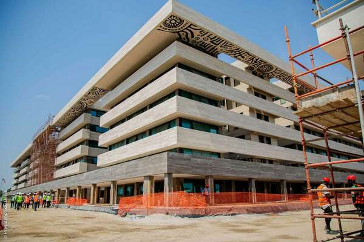
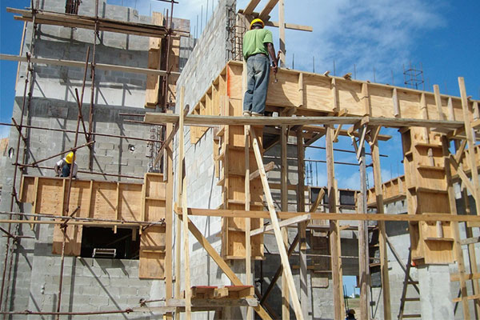

Nos Projets de Construction
Chez Dandjin Dredging Depth & Construction Ltd, la construction est bien plus qu’un métier — c’est une responsabilité envers les générations futures. Nous réalisons des projets d'infrastructure de haute qualité sur l’ensemble du territoire béninois : routes, quais, digues, berges, bâtiments publics et privés.
Notre équipe d’ingénieurs, de techniciens et de chefs de chantier œuvre dans le respect strict des normes techniques et environnementales. Chaque projet est conçu pour durer, en tenant compte des réalités locales, des conditions climatiques et des besoins des populations.
Nous avons par exemple contribué au Projet Asphaltage, un chantier de plus de 600 km de voiries urbaines dans neuf grandes villes du Bénin. Nous avons aussi participé à la construction de logements sociaux dans le cadre d’un programme ambitieux de l’État, avec des logements durables, accessibles et bien intégrés aux réseaux urbains.
En zone portuaire, notre expertise est mise à profit pour renforcer les berges et construire des quais capables de résister aux mouvements fluviaux. Ces infrastructures sont essentielles pour le développement économique, notamment dans le secteur logistique et maritime.
Grâce à notre approche rigoureuse et nos équipements de pointe, nous garantissons à nos partenaires un respect strict des délais et des budgets. Notre mission est claire : bâtir le Bénin de demain avec sérieux, innovation et engagement.